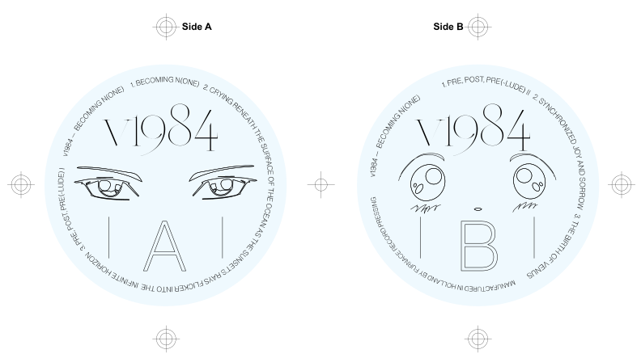
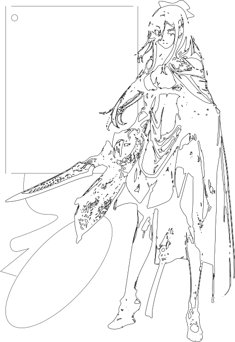
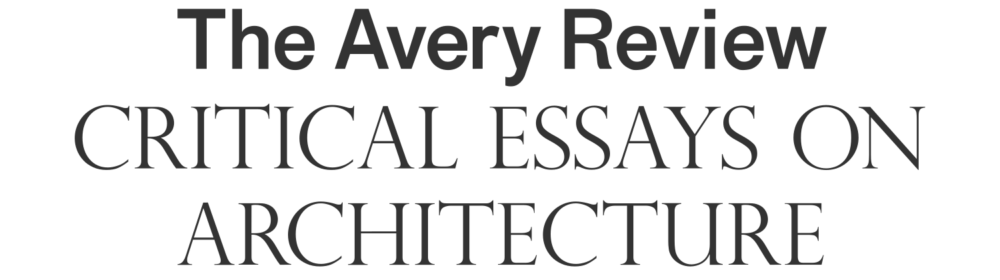

Mold Magazine Issue 1, Photography by Thomas McCarty. With Matthew Tsang. — June 2017
I'm currently the Director of Design at SSENSE, where I lead and manage a group of ten designers and art directors on re-launching the visual identity and creating a unified design language across all touchpoints.

SSENSE Off Model Art Direction, with Matthew Tsang. Assisted by Thanh Truc Trinh. Photography by Thomas McCarty. Set Design by Alex Hercule Desjardins. — August 2017
Logo design, for Satie — October 2013

Masthead / Nameplate design for Mold Magazine. A publication about the future of food. — October, 2016
Masthead / Nameplate design for Mold Magazine. A publication about the future of food. — October, 2016

Masthead / Nameplate design for Mold Magazine. A publication about the future of food. — October, 2016

Teresa Teng, Comissioned by Catalogue for their 2015 exhibition Friends Our Family at KK Outlet. — 297 × 420mm, Silkscreened print. October 2015
Logo design for Art Palestine International. Designed with Scott Langer. — October 2014

Masthead / Nameplate design for Mold Magazine. A publication about the future of food. — October, 2016


Cover design and typography for Mold Issue 01. With Matthew Tsang. Photography by David Brandon Geeting.
Logo design for Leong Leong Architects — December 2016

Logo design for Art Palestine International. Designed with Scott Langer. — October 2014

Poster design and illustration for Miss Ruthless, an ongoing exhibition series on pageantry as method. — 420 × 594mm Digital Print, July 2017. With Matthew Tsang


SSENSE Off Model Art Direction, with Matthew Tsang. Assisted by Thanh Truc Trinh. Photography by Thomas McCarty. Set Design by Alex Hercule Desjardins. — August 2017


Record sleeve design for v1984's Becoming N(one) — June 2016
Identity design for Nothing in Common, a now-defunct design and technology studio that I co-founded. — January 2014

Masthead / Nameplate design for Mold Magazine. A publication about the future of food. — October, 2016

Drawing, January 2014

Book cover design, Art direction: Andy pressman — May 2014

Vinyl Label Design for v1984's Becoming N(one) — June 2016
Lil doodle — October 2013

Commisioned by FAT Magazine, Memphis rappers — May 2016

Another lil' doodle — October 2013


Matter over Matrix, 3.35 × 3.36 metre mural, series of 2. Installed in the New Museum as part of Adidas' Future Capsule exhibition in the New Museum. Curated by Kamp Grizzly. — May 2017
Lettering for v1984 — May 2016


Logo and typographic system for a bilingual gallery in Thailand

Identity design for the Avery Review. With Scott Langer — July 2014

Drawing — January 2014
Lettering for Wet, Creative direction by Hassan Rahim — June 2015

Hyper, Digital. — May 2015

Comissioned by FAT Magazine, Memphis Rappers — May 2016


Hyper, Digital. — May 2015

Comissioned by FAT Magazine, Memphis Rappers — May 2016


Book cover design. Art directior: Andy Pressman — September 2015


Drawing — February 2014


Illustration for the New York Times, China's Censored World by Evan Osnos — May 2014